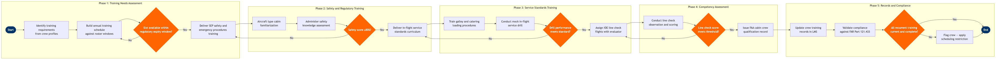

| Step | L4 Step Name | KPI / Target | Pain Point / Risk | Gate |
|---|---|---|---|---|
| 1.1 | Identify crew training requirements from profiles | Training needs identified ≥90 days before regulatory expiry for 100% of crew | Jeppesen stores expiry dates per qualification type but does not auto-generate training demand; planners must run manual extracts, creating lead-time risk when expiry windows cluster post-peak season | |
| 1.2 | Build annual training schedule against roster windows | Training schedule published ≥60 days in advance for 95% of planned events | SAP SuccessFactors Learning schedule does not have a real-time read of Jeppesen roster data; integration relies on nightly batch sync, causing scheduling conflicts when roster changes are made intra-day | |
| 1.3 | Validate training slot availability vs expiry window | Zero crew members scheduled for training after regulatory expiry date | Facility and simulator capacity at crew training centres frequently bottlenecks slot availability, particularly for SEP training requiring full-scale cabin mock-ups — often forces costly overtime or third-party centre bookings | ⚠ |
| 2.1 | Deliver SEP safety & emergency procedures training | SEP training completion rate ≥100% before regulatory expiry (FAR Part 121.433 mandatory); classroom session NPS ≥4.2/5.0 | FAR Part 121.433 mandates annual SEP recurrent training; full-scale cabin mock-up availability at training centres is constrained — scheduling slippage >30 days past planned date has occurred during peak hiring periods | |
| 2.2 | Conduct aircraft type-specific cabin familiarization | 100% of cabin crew type-qualified before first line assignment on that aircraft variant | Fleet mix of B737-700 (-143 seats) and B737-800/MAX 8 (-175 seats) requires separate door and evacuation drills; adding MAX 8 MCAS awareness content required unplanned syllabus revision after 2019 grounding | |
| 2.3 | Administer written safety knowledge assessment | First-attempt pass rate (score ≥80%) ≥95% of cohort; average score ≥87% | Assessment question bank in SAP SuccessFactors Learning is not versioned against specific regulatory revision cycles; outdated questions have appeared after FAA circular updates, requiring manual audit of question pools before each cohort | |
| 2.4 | Evaluate safety assessment pass/fail and route remediation | Remedial loop resolved within 14 calendar days; zero crew deployed without confirmed pass | Crew who fail on first attempt require additional classroom time that displaces scheduled cohorts; no automated re-booking logic in SAP SuccessFactors Learning forces manual calendar intervention | ⚠ |
| 3.1 | Deliver in-flight service standards curriculum | Service standards curriculum delivered to 100% of active cabin crew within annual training cycle; session completion rate ≥98% | Inflight product changes (e.g. menu rotations, new beverage service procedures) are communicated via separate email distribution; SAP SuccessFactors Learning course content lags by 4–6 weeks, leaving a gap where crew operate on outdated standards | |
| 3.2 | Train galley management and catering loading procedures | Galley loading error rate on line flights ≤0.5% of sectors (measured via customer complaint and inflight report data) | B737-700 and B737-800 have different galley configurations; training material must be aircraft-type-specific but SAP SuccessFactors Learning course library does not enforce type-level prerequisites, allowing crew to complete wrong-type galley module | |
| 3.3 | Conduct mock in-flight service drill and evaluate | Drill pass rate ≥90% first attempt; average service quality score ≥3.8/5.0 on evaluation rubric | Mock cabin facility time is shared with SEP drills; scheduling conflicts cause service drills to be shortened or deferred, resulting in crew entering IOE with incomplete practical service training | ⚠ |
| 4.1 | Assign IOE line check flights with qualified evaluator | IOE line check flights assigned within 10 days of practical training completion for 90% of crew | Qualified cabin crew evaluators (check cabin crew) are drawn from operational roster — their availability conflicts with line flying duties; Jeppesen does not distinguish check crew duty type from line duty for optimisation purposes, causing evaluator shortfalls | |
| 4.2 | Conduct IOE line check observation and scoring | IOE report submitted within 24 hours of check flight; evaluation criteria coverage ≥100% of mandatory competency items | IOE evaluation forms are completed on paper and manually entered into IBS iCrew post-flight; transcription errors and late submissions (>48 hours) have created compliance gaps identified during FAA ATOS audit cycles | |
| 4.3 | Evaluate IOE line check pass/fail threshold | IOE first-attempt pass rate ≥88%; crew requiring >2 IOE attempts flagged for remediation programme review | No automated escalation logic when crew fail second IOE attempt; Crew Training Manager must manually initiate extended remediation, which delays qualification by 3–6 weeks and increases cost per trained crew member | ⚠ |
| 4.4 | Issue FAA-compliant cabin crew qualification record | Qualification record issued within 48 hours of final IOE pass; zero records issued with incomplete module pre-requisites | FAR Part 121 requires the operator to maintain individual crew training records that are producible on FAA request within 24 hours; IBS iCrew record completeness depends on all upstream systems having posted — batch sync gaps with SAP SuccessFactors create producibility risk | |
| 5.1 | Synchronise training records across LMS and crew system | Record reconciliation completed within 24 hours of qualification issuance; discrepancy rate between systems ≤0.5% | Nightly batch integration between SAP SuccessFactors Learning and IBS iCrew uses flat-file exchange without transaction-level error logging; silent failures result in qualification data appearing complete in LMS but absent in crew scheduling system, causing crew to be erroneously assigned flights | |
| 5.2 | Validate FAR Part 121.433 recurrent compliance status | 100% of active flying crew compliant with all FAR Part 121.433 recurrency requirements at all times; compliance dashboard accuracy ≥99.5% | FAR Part 121.433 recurrency window calculations require tracking multiple qualification types (SEP, type, service) with different intervals; manual tracking in spreadsheets has been used as a backup when IBS iCrew reports are slow, introducing version-control risk | |
| 5.3 | Apply scheduling restriction to non-compliant crew | Scheduling restriction applied within 2 hours of non-compliance flag; zero non-compliant crew assigned to revenue flights | Jeppesen scheduling hold must be manually applied by a crew compliance analyst — there is no automated API trigger from IBS iCrew non-compliance flags; overnight non-compliance identified after Jeppesen pairing optimiser has already run can result in non-compliant pairings requiring costly last-minute rebidding | ⚠ |